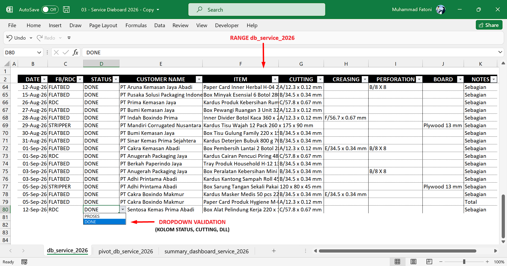
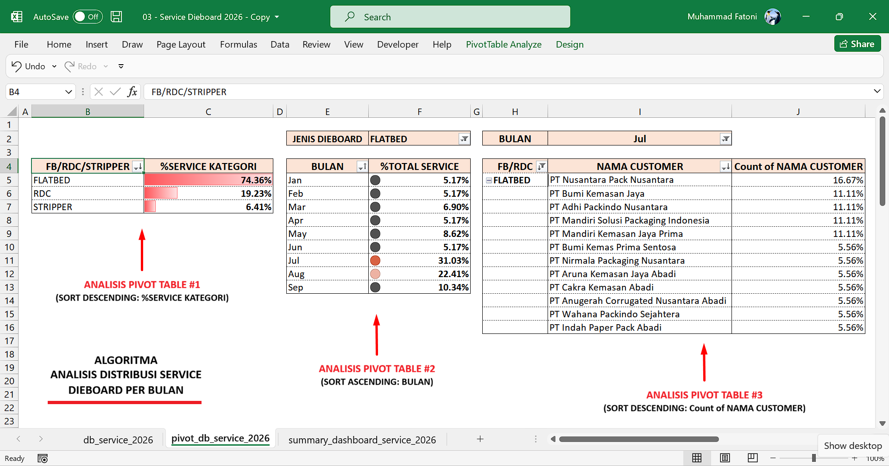
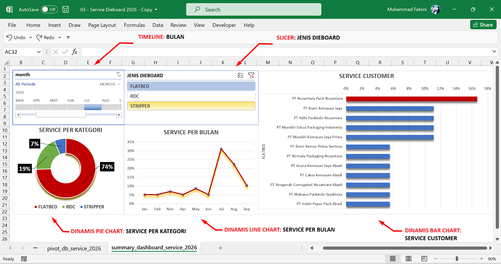
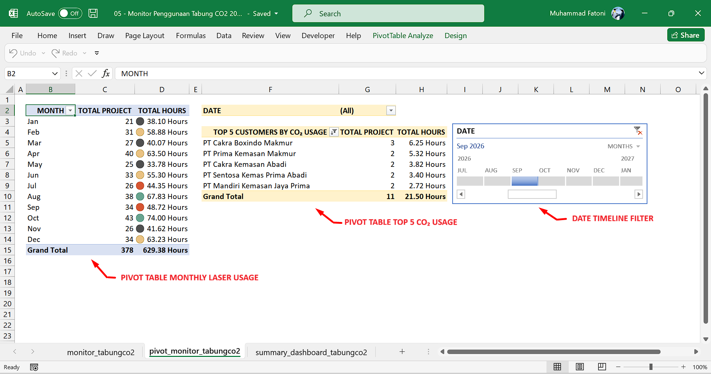
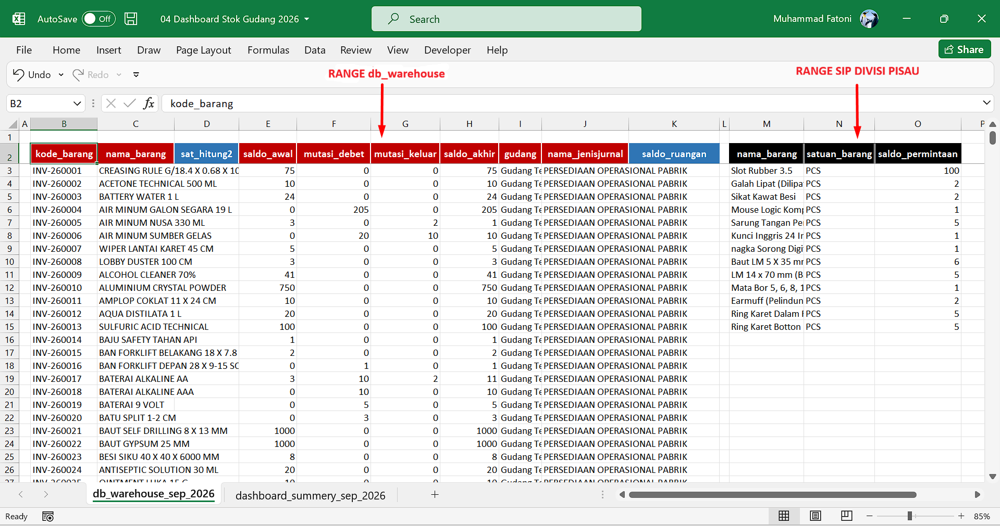
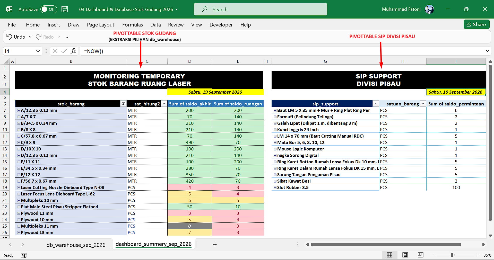

01 / PRODUKSI
Operasi & Perawatan CNC
Pengoperasian Dieboard Laser Cutting dan Autoblade Bending, pemeriksaan pra-operasional, perawatan, serta pemantauan hasil proses.
Operasi CNC · Problem Solving · Optimasi Proses · Data OperasionalMenggabungkan pengalaman operasional mesin, pemecahan masalah, optimasi proses, dan pengolahan data untuk mendukung kegiatan produksi.
Pengalaman produksi, pemecahan masalah, dan pengolahan data operasional.
Saya lulusan SMK (TKR) dengan pengalaman lebih dari 3 tahun di lingkungan manufaktur kemasan karton. Dalam peran sebagai Staf R&D Divisi Pisau, saya mengoperasikan dan merawat 2 mesin CNC, serta mengembangkan sistem record kerja berbasis Excel
Saya juga terbiasa menangani gangguan awal dan berkoordinasi lintas divisi untuk mendukung kelancaran operasional.
Kompetensi yang digunakan untuk mendukung proses produksi dan pemantauan operasional.
Pengoperasian Dieboard Laser Cutting dan Autoblade Bending, pemeriksaan pra-operasional, perawatan, serta pemantauan hasil proses.

Mengamati gangguan, melakukan pemeriksaan awal, menguji hasil, dan melibatkan teknisi terkait jika dibutuhkan.

Penyesuaian file DXF, layout pemanfaatan material, serta pengoptimalan parameter proses untuk mendukung kualitas dan kelancaran produksi.

Pengolahan data operasional menggunakan tabel, formula, PivotTable, PivotChart, slicer, timeline, dan dashboard.
Gambaran umum alur pekerjaan dari gambar kerja hingga pemeriksaan hasil.


Menyiapkan file DXF dan daftar pekerjaan/outstanding.
Menyiapkan material, layout, dan parameter proses.
Menjalankan proses dan memantau kondisi serta hasilnya.
Memeriksa presisi, konsistensi, dan melakukan pendataan.
Penanganan gangguan dilakukan bertahap, disertai pengujian dan eskalasi saat masalah belum terselesaikan.
01 / AMATIMengenali gejala dan memastikan kondisi gangguan.
 02 / IDENTIFIKASI
02 / IDENTIFIKASIMelakukan pemeriksaan dan troubleshooting awal sesuai kemampuan serta kewenangan.
03 / ANALISISMemeriksa apakah proses kembali berjalan normal atau gangguan berulang.
04 / PERBAIKANBerkoordinasi dengan teknisi dan pihak terkait jika perbaikan awal belum berhasil.
Upaya mandiri: pemeriksaan dan troubleshooting awal belum menyelesaikan gangguan.
Eskalasi: koordinasi dengan teknisi dan rekomendasi developer untuk penggantian tabung CO₂.
Hasil: proses laser dan output kembali normal.
Pengamatan parameter, penyesuaian gambar kerja, dan validasi hasil untuk mendukung kualitas, konsistensi, serta efisiensi.
Ringkasan jenis pekerjaan dan pendekatan yang digunakan. Data untuk demonstrasi publik harus berupa data dummy.
Pencatatan rencana kerja dan pembaruan progres outstanding untuk membantu monitoring operasional.
Pengelolaan riwayat servis untuk memudahkan penelusuran catatan perawatan dan gangguan mesin.
Pengolahan data durasi penggunaan tabung CO₂ sebagai bahan monitoring dan evaluasi operasional.
Contoh pendekatan monitoring ketersediaan material serta penyesuaian layout file DXF dan identitas pekerjaan.
Data terstruktur membantu monitoring, analisis pola, evaluasi, dan penentuan tindak lanjut.
Perangkat Excel yang digunakan meliputi Table, Formula, PivotTable, PivotChart, Slicer, dan Timeline.










Koordinasi dilakukan berdasarkan kebutuhan operasional dan jenis gangguan yang ditemukan.
Perbaikan kelistrikan.
Gangguan mekanis.
Sistem udara bertekanan dan pendingin.
Software dan jaringan lokal.
Database, bon, dan stok opname.
Prioritas pekerjaan mendesak.
Pengalaman kerja yang membentuk kedisiplinan, pelayanan, dan kemampuan operasional.
PT Pura Corrugated Box · Kudus · Outsourcing
Pengalaman di layanan parkir, tenaga pengajar, dan dukungan kebersihan/fasilitas yang turut membentuk kedisiplinan, ketelitian, komunikasi, dan tanggung jawab kerja.
Terbuka untuk kesempatan kerja dan diskusi profesional yang relevan dengan operasional produksi, optimasi proses, serta pengolahan data.